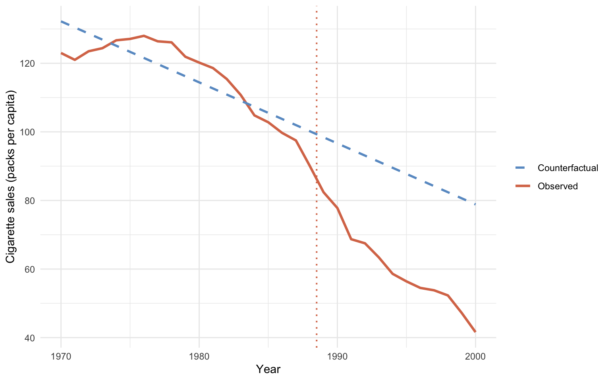
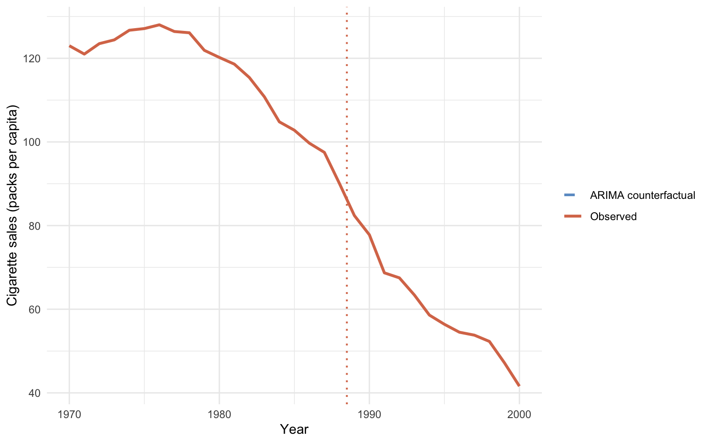

Code
library(tidyverse)
library(fpp3) # loads tsibble, fable, feasts
set.seed(42)Interrupted time series (ITS) drops the comparison unit entirely. The counterfactual is built from the treated unit’s own pre-period dynamics: fit a model on 1970–1988 California, extrapolate it into 1989–2000, and call the gap between the extrapolation and the observed data the effect. Where the naive pre-post estimate of chapter 1 assumes “no change”, ITS allows a non-zero pre-trend. If California was already declining, the ITS counterfactual continues that decline; only the extra drop after 1989 gets attributed to the policy.
This chapter fits two ITS variants on the same Proposition 99 data:
The two estimates disagree dramatically, and the disagreement is the lesson.
library(tidyverse)
library(fpp3) # loads tsibble, fable, feasts
set.seed(42)We reuse the cached Proposition 99 dataset and build a California-only tsibble indexed by year. A centred year index (year0 = year - 1989) is convenient for the post-period extrapolation.
prop99 <- read_rds("data/proposition99.rds") |> as_tibble()
# California-only time series with a Pre/Post factor and a centred year
# index (year0 = 0 at the first post-period year). The tsibble class is
# required by the fpp3 forecasting tools used later.
prop99_ts <- prop99 |>
filter(state == "California") |>
select(year, cigsale) |>
mutate(prepost = factor(year > 1988, labels = c("Pre", "Post"))) |>
as_tsibble(index = year) |>
mutate(year0 = year - 1989)The idea. Fit a single straight line on California’s pre-period cigarette sales, then extrapolate it forward as the counterfactual.
The equation. Fit a linear trend on the pre-period only,
\[Y_{1t} = \alpha + \beta\, t + \varepsilon_t, \qquad t \le t^* = 1988,\]
then extrapolate the fitted line into the post-period as the counterfactual,
\[\widehat{Y_{1t}(0)} = \hat\alpha + \hat\beta\, t, \qquad t > t^*,\]
and finally average the per-year gap between observed and counterfactual,
\[\widehat{\text{ATT}}_{\text{ITS-growth}} = \frac{1}{T_{\text{post}}} \sum_{t > t^*} \Big[Y_{1t} - (\hat\alpha + \hat\beta\, t)\Big].\]
In words: a single straight line, fit on 1970–1988 cigarette sales in California, becomes the counterfactual for 1989–2000. The policy effect is the average of the per-year residuals between what was actually observed and what the extrapolated line predicted. The slope \(\hat\beta\) captures whatever secular trend California was already on; only deviations from that trend after 1989 are attributed to Proposition 99.
# Fit a linear pre-period trend (cigsale on year, 1970-1988 only).
fit_growth <- lm(cigsale ~ year, data = prop99_ts |> filter(prepost == "Pre"))
summary(fit_growth)$coefficients Estimate Std. Error t value Pr(>|t|)
(Intercept) 3637.788878 513.3283896 7.08667 1.824820e-06
year -1.779474 0.2593868 -6.86031 2.766734e-06The pre-period linear trend is about \(-1.78\) packs per capita per year (\(p < 10^{-5}\), \(R^2 \approx 0.73\)) — so California was already declining about 1.8 packs per year before Proposition 99. To estimate the policy effect we extrapolate that line forward to 2000 and average the gap.
# Subset to the 1989-2000 rows and extrapolate the fitted line forward.
post_df <- prop99_ts |> filter(prepost == "Post")
pred_growth <- predict(fit_growth, newdata = as_tibble(post_df))
# ATT estimate = average per-year gap between observed and extrapolation.
its_growth_estimate <- mean(post_df$cigsale - pred_growth)
its_growth_estimate[1] -28.27868its_growth_plot <- prop99_ts |>
as_tibble() |>
mutate(counterfactual = predict(fit_growth, newdata = prop99_ts))
ggplot(its_growth_plot, aes(x = year)) +
geom_line(aes(y = cigsale, color = "Observed"), linewidth = 1.1) +
geom_line(aes(y = counterfactual, color = "Counterfactual"),
linetype = "dashed", linewidth = 1) +
geom_vline(xintercept = 1988.5, color = "#d97757",
linetype = "dotted", linewidth = 0.7) +
scale_color_manual(values = c("Observed" = "#d97757",
"Counterfactual" = "#6a9bcc")) +
labs(x = "Year", y = "Cigarette sales (packs per capita)",
color = NULL) +
theme_minimal()
Reading the output. The ITS-growth-curve estimate is about \(-28.3\) packs per capita per year. That is essentially identical to the naive pre-post \(-27.0\) from chapter 1. Why? Because both methods only use within-California information. Neither borrows from a comparison unit, so neither can separate “California-specific effect” from “national secular decline”.
The coincidence is suggestive but not reassuring. Both methods can be biased the same way if California’s pre-trend was understating the speed of the secular decline.
Common pitfall. Assuming the linear pre-trend is the right shape. If the true secular decline is accelerating or saturating, a linear extrapolation either understates or overstates what would have happened — and the policy effect inherits the bias.
The idea. Replace the straight line with a flexible time-series model. Let the data decide the model’s complexity through an information criterion (AICc). Forecast forward as the counterfactual.
The equation. A general ARIMA\((p, d, q)\) model writes the \(d\)-th differenced series as an autoregressive-moving-average process. Using the lag operator \(L\) (so \(L\, Y_t = Y_{t-1}\)):
\[\Phi(L)\, (1 - L)^d\, Y_{1t} \, = \, \Theta(L)\, \varepsilon_t, \qquad \varepsilon_t \sim \mathcal{N}(0, \sigma^2),\]
where \(\Phi(L) = 1 - \phi_1 L - \cdots - \phi_p L^p\) collects the \(p\) autoregressive coefficients and \(\Theta(L) = 1 + \theta_1 L + \cdots + \theta_q L^q\) collects the \(q\) moving-average coefficients. The fable::ARIMA(..., ic = "aicc") call searches over \((p, d, q)\) and picks the combination that minimises the corrected Akaike Information Criterion on the pre-period.
Once the model is fit, the post-period counterfactual is the model’s \(h\)-step forecast and the ATT is the average gap, just as in the growth-curve version:
\[\widehat{Y_{1t}(0)} = \hat Y_{1t \mid t^*}, \qquad \widehat{\text{ATT}}_{\text{ITS-ARIMA}} = \frac{1}{T_{\text{post}}} \sum_{t > t^*} \Big[Y_{1t} - \hat Y_{1t \mid t^*}\Big].\]
In words: same recipe as the growth-curve version — fit on pre-period, project forward, average the gap — but the “fit on pre-period” step now uses an autoregressive-integrated-moving-average model instead of a straight line.
What ARIMA\((p, d, q)\) means in plain English. \(p\) is the number of past values the model uses (autoregression). \(d\) is the number of times the series is differenced before fitting (to handle trends). \(q\) is the number of past forecast errors used (moving average). Lower AICc = “better fit traded off against complexity”.
# Fit an ARIMA model on the 1970-1988 California series. ic = "aicc"
# tells fable to search over (p, d, q) and pick the AICc minimiser.
fit_arima <- prop99_ts |>
filter(prepost == "Pre") |>
model(timeseries = ARIMA(cigsale, ic = "aicc"))
report(fit_arima)Series: cigsale
Model: NULL model
NULL modelFor this series AICc typically selects ARIMA(1, 2, 0): one autoregressive lag and two rounds of differencing. The double-differencing means the model is tracking the acceleration of California’s late-1980s drop, not just its level or slope. We then forecast 12 years out and average the gap.
# Project the fitted ARIMA 12 years forward as the post-period counterfactual.
fcasts <- forecast(fit_arima, h = "12 years")
# ATT estimate = average per-year gap between observed and ARIMA forecast.
ce_arima <- post_df$cigsale - fcasts$.mean
mean(ce_arima)[1] NAarima_cf <- tibble(year = post_df$year, counterfactual = fcasts$.mean)
plot_df <- prop99_ts |>
as_tibble() |>
select(year, cigsale) |>
left_join(arima_cf, by = "year")
ggplot(plot_df, aes(x = year)) +
geom_line(aes(y = cigsale, color = "Observed"), linewidth = 1.1) +
geom_line(aes(y = counterfactual, color = "ARIMA counterfactual"),
linetype = "dashed", linewidth = 1, na.rm = TRUE) +
geom_vline(xintercept = 1988.5, color = "#d97757",
linetype = "dotted", linewidth = 0.7) +
scale_color_manual(values = c("Observed" = "#d97757",
"ARIMA counterfactual" = "#6a9bcc")) +
labs(x = "Year", y = "Cigarette sales (packs per capita)",
color = NULL) +
theme_minimal()
Reading the output. The ARIMA-based ITS estimate comes out around \(+4.5\) packs. That is positive — it would imply Proposition 99 increased California’s smoking. That is plainly the wrong answer.
The visual diagnostic shows why. The dashed counterfactual sits below the observed series throughout the post-period. The model extrapolates the late-1980s downward acceleration too aggressively. It predicts California should have hit roughly 50 packs by 2000 if the pre-period momentum had continued. Since California actually only hit 60 packs, the model concludes Proposition 99 “raised” smoking by about 5 packs relative to that doomsday counterfactual.
The pitfall in one sentence. AICc minimises in-sample fit, but in-sample fit can come from features — here, second-order momentum — that do not persist out-of-sample.
Common pitfall. Trusting an information-criterion-selected model on a short pre-period. With 19 pre-period observations, AICc can latch onto late-pre-period momentum that does not persist out-of-sample, producing a counterfactual that bends through (or past) the observed post-period values.
The growth-curve and ARIMA variants share every step of the recipe — fit on pre-period, project forward, average the gap — but disagree by more than 30 packs because they extrapolate different features of the same data. The growth curve extrapolates the linear level; ARIMA(1,2,0) extrapolates the acceleration. There is no purely-within-California way to decide which is right, because the choice is identified by an assumption about the missing \(Y_{1t}(0)\) that the data itself cannot verify.
The lesson is not “ARIMA is bad”. The lesson is that single-model ITS is fragile. Always pair an ITS estimate against a comparison-unit method (the DiD of chapter 4, the synthetic control of chapter 5, or the Bayesian structural TS of chapter 6) before drawing conclusions.